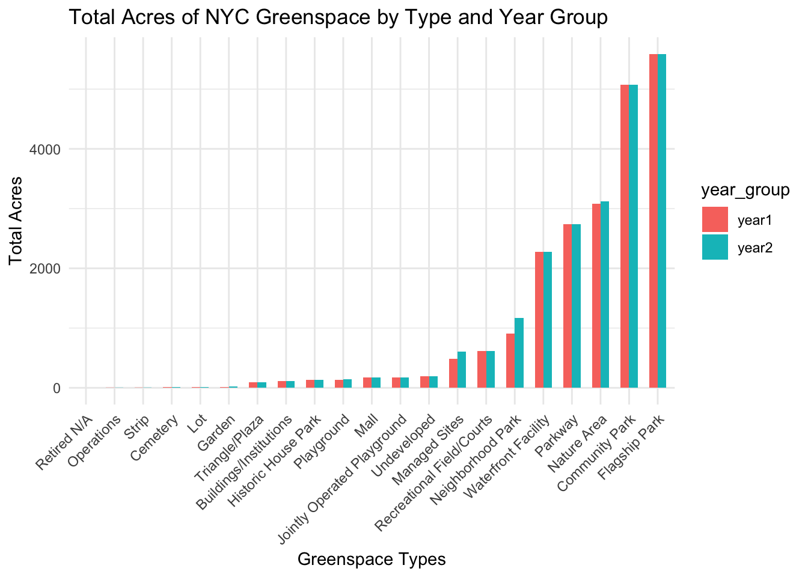

Plot comparisons by year/borough.
library(tidyverse)
library(rvest)##
## Attaching package: 'rvest'## The following object is masked from 'package:readr':
##
## guess_encodinglibrary(readxl)
library(plotly)##
## Attaching package: 'plotly'## The following object is masked from 'package:ggplot2':
##
## last_plot## The following object is masked from 'package:stats':
##
## filter## The following object is masked from 'package:graphics':
##
## layoutlibrary(flexdashboard)
library(sf)## Linking to GEOS 3.11.0, GDAL 3.5.3, PROJ 9.1.0; sf_use_s2() is TRUElibrary(shiny)
library(leaflet)
library(scales)##
## Attaching package: 'scales'## The following object is masked from 'package:purrr':
##
## discard## The following object is masked from 'package:readr':
##
## col_factorparticulate_matter =
read_csv("data/Air_Quality_20231208.csv")## Rows: 16218 Columns: 12
## ── Column specification ────────────────────────────────────────────────────────
## Delimiter: ","
## chr (7): Name, Measure, Measure Info, Geo Type Name, Geo Place Name, Time Pe...
## dbl (4): Unique ID, Indicator ID, Geo Join ID, Data Value
## lgl (1): Message
##
## ℹ Use `spec()` to retrieve the full column specification for this data.
## ℹ Specify the column types or set `show_col_types = FALSE` to quiet this message.tidy_analysis_pm =
particulate_matter |>
janitor::clean_names() |>
mutate(
unique_id = as.character(unique_id),
indicator_id = as.character(indicator_id),
geo_join_id = as.character(geo_join_id)) |>
filter(name == "Fine particles (PM 2.5)") |>
filter(time_period %in% c("Annual Average 2016", "Annual Average 2017",
"Annual Average 2018", "Annual Average 2019",
"Annual Average 2020", "Annual Average 2021")) |>
filter(geo_type_name == "Borough") |>
select(-unique_id, -indicator_id, -start_date) |>
rename(borough = geo_place_name) |>
mutate(
period = case_when(
time_period %in% c("Annual Average 2016", "Annual Average 2017", "Annual Average 2018") ~ "2016-2018",
time_period %in% c("Annual Average 2019", "Annual Average 2020", "Annual Average 2021") ~ "2019-2021"
)
) |>
group_by(borough, period) |>
summarize(
average_pm2.5 = mean(data_value, na.rm = TRUE),
.groups = "drop"
) |>
pivot_wider(
names_from = period,
values_from = average_pm2.5,
names_prefix = "avg_pm2.5_"
)tidy_analysis_pm |>
pivot_longer(cols = -borough, names_to = "Year_Group", values_to = "PM2.5") |>
mutate(borough = factor(borough, levels = unique(borough[order(PM2.5)]))) |>
ggplot(aes(x = borough, y = PM2.5, fill = Year_Group)) +
geom_bar(position = "dodge", stat = "identity") +
labs(
title = "Average PM2.5 Levels by Borough (2016-2018 vs 2019-2021)",
x = "Borough",
y = "PM2.5 Values",
fill = "Year Group"
) 
make knitr chart that shows with in numbers differences between years
Show map of PM2.5 levels per UH42 index across years.
geography =
read_excel("data/geoid_borough_name_nyc.xlsx") |>
rename(geo_join_id = ID) |>
mutate(geo_join_id =
as.character(geo_join_id))particulate_matter =
read_csv("data/Air_Quality_20231208.csv")## Rows: 16218 Columns: 12
## ── Column specification ────────────────────────────────────────────────────────
## Delimiter: ","
## chr (7): Name, Measure, Measure Info, Geo Type Name, Geo Place Name, Time Pe...
## dbl (4): Unique ID, Indicator ID, Geo Join ID, Data Value
## lgl (1): Message
##
## ℹ Use `spec()` to retrieve the full column specification for this data.
## ℹ Specify the column types or set `show_col_types = FALSE` to quiet this message.tidy_uhf42_pm =
particulate_matter |>
janitor::clean_names() |>
mutate(
unique_id = as.character(unique_id),
indicator_id = as.character(indicator_id),
geo_join_id = as.character(geo_join_id)) |>
filter(name == "Fine particles (PM 2.5)") |>
filter(time_period %in% c("Annual Average 2016", "Annual Average 2017",
"Annual Average 2018", "Annual Average 2019",
"Annual Average 2020", "Annual Average 2021")) |>
filter(geo_type_name == "UHF42") |>
select(-unique_id, -indicator_id, -start_date) |>
mutate(
period = case_when(
time_period %in% c("Annual Average 2016", "Annual Average 2017", "Annual Average 2018") ~ "2016_2018",
time_period %in% c("Annual Average 2019", "Annual Average 2020", "Annual Average 2021") ~ "2019_2021"
)
) |>
group_by(geo_place_name, geo_join_id, period) |>
summarize(
average_pm2.5 = mean(data_value, na.rm = TRUE),
.groups = "drop"
) |>
pivot_wider(
names_from = period,
values_from = average_pm2.5,
names_prefix = "avg_pm2.5_"
) uhf42_map <- st_read("data/UHF_42_DOHMH_2009.shp") ## Reading layer `UHF_42_DOHMH_2009' from data source
## `/Users/shayneestill/Desktop/Data Science I/p8105_nyc_child_asthma/data/UHF_42_DOHMH_2009.shp'
## using driver `ESRI Shapefile'
## Simple feature collection with 43 features and 6 fields
## Geometry type: MULTIPOLYGON
## Dimension: XY
## Bounding box: xmin: 913090.8 ymin: 120053.5 xmax: 1067310 ymax: 272932
## Projected CRS: NAD83 / New York Long Island (ftUS)tidy_uhf42_pm <-
tidy_uhf42_pm |>
rename(UHFCODE = geo_join_id) |>
mutate(
UHFCODE = as.double(UHFCODE))map_uhf42 <-
uhf42_map |>
left_join(tidy_uhf42_pm, by = "UHFCODE")